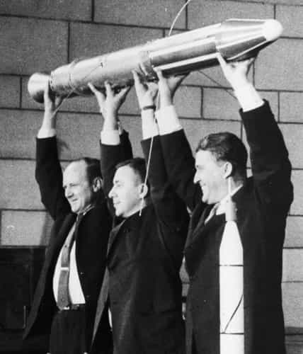
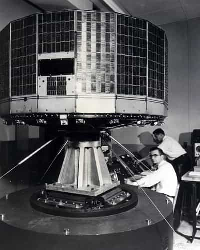

Space
program
Timeline
-

Jul, 29, 1958
NASA founded
National Space Agency signed as an act by Potus Eisenhower, as a result of the Cold War space race in the 1950s.
Articles:
nasa.gov -
Oct, 15, 1958
Experimental planes
NASA joins forces with US Air Force, navy and Aviation to gather data for the creation of the experimental rocket plane X-15.
Articles:
nasa.gov -
Apr, 9, 1959
Project Mercury
NASA chooses 7 pilots, for special training in a one man capsule, eventually reaching earths orbit.
Articles:
nasa.gov -

Apr, 1, 1960
TIROS-1 Launch
NASA launched Americas first weather satellite, the TIROS-1. Monitoring Earths cloud cover and weather patterns form space.
-
1962 - 1966
Gemini Program
An early NASA human spaceflight program, two man capsule that helped NASA get ready for the Apollo moon landings.
Articles:
nasa.gov -
1962 - 1975
Flying bathtubs?
New heavyweight body designs looking like flying bathtubs paved the way for future space shuttle designs.
Articles:
nasa.gov -
1961 - 1975
Apollo program
The NASA program that put man on the moon in a 3 man capsule.
Articles:
nasa.gov -
July 20, 1969
One small step for man..
The day that Apollo11 put the first humans on the moon.
Articles:
nasa.gov -
1969-present
Space shuttle spinnofs
The space shuttle program generates tons of technological spinoffs
Articles:
spinoff.nasa.gov -
July 23, 1972
Landsat launches
Meeting immense budgetary, geopolitical and secrecy opposition. The Landsat1 was finally launched in 1972, providing earth terrain data from space.
Articles:
landsat.gsfc.nasa.gov -
May, 14, 1973
Skylab space station
NASA launches the first US space station from Kennedy Space Center.
Articles:
nasa.gov -
1977-present
Voyager
Vessel for outer space exploration, has passed Jupiter and Saturn and is still going strong over 40 years later.
Articles:
voyager.jpl.nasa.gov -
1979-1981
Winglets
NASA introduced aeronautical innovations that would benefit all types of aircrafts
Articles:
nasa.gov -
1981-1990
Forward-swept wings
X-29 Flight research brought new innovation.
Articles:
nasa.gov -
1986-1993
Wind shear program
Sensors developed to improve air safety
Articles:
nasa.gov -
1990-present
Hubble Space Telescope
First telescope designed to be visited in space by astronauts and have repairs.
Articles:
nasa.gov -
1993-present
International space station
United states and Russia merged efforts to design and construct an international space station.
Articles:
NY Times -
1999-present
Earth observing system (EOS)
NASA launched satellites for long-term global observations of the surface, earth, atmosphere and oceans.
Articles:
eospso.nasa.gov -
1994-2003
Environmental research (ERAST)
Joint NASA initiative to develop aerial vehicles for environmental missions at high altitudes.
Articles:
nasa.gov -
1998-present
Mars exploration Rovers
Mars pathfinder demonstrated a number of innovative, economical and highly effective approaches to spacecraft and mission design.
Articles:
solarsystem.nasa.gov -
May, 6, 2002
SpaceX founded
Elon Musk spends millions of dollars from his own fortune to fund spaceX.
Articles:
NY Times -
2004
Vision for space exploration
President Bush unveils new vision for space exploration towards using the moon as a launching point for missions beyond.
Articles:
nasa.gov -
Sep, 28, 2008
Falcon1 reaches orbit
Falcon1 is the first privately funded rocket to reach earth orbit.
Articles:
Spacex.com -
2009
Mars science laboratory
A long term effort of robotic exploration of the red planet, trying to find out if mars is an environment able to sustain microbial life.
Articles:
nasa.gov -
Dec, 9, 2010
Falcon9 launch & recover
Rocket launches, reaches orbits and is succesfully recovered.
Articles:
nasa.gov -
May, 25, 2012
Spacecraft sent to ISS
SpaceX Dragon becomes first private spacecraft to visit the international space station.
Articles:
Spacex.com -
Dec, 3, 2013
SpaceX first satellite launch
Falcon9 rocket launched it’s first commercial payload, carrying the SES-8 communications satellite.
Articles:
Forbes -
Dec, 22, 2015
Falcon9 succesful landing
First orbital rocket to propulsively land safely back on earth.
Articles:
NY Times -
Apr, 8, 2016
Landing on droneship in ocean
Falcon9 makes history by landing on a droneship in the atlantic ocean.
Articles:
CNN -
Sep, 6, 2016
Interplanetary transport system
SpaceX reveals long-awaited ITS, a spaceship and rocket to colonize Mars with.
Articles:
The Verge -
Mar, 30, 2017
First to re-fly used rocket
SpaceX becomes the first to re-fly, in a step towards vastly less expensive spaceflights.
-
Jun, 3, 2017
1st reflight of commercial spacecraft
Falcon9 completes it's eleventh resupply mission to International space station with successful landing in florida.
-
Sep, 6, 2017
Unveils worlds largest rocket
The biggest rocket ever built called Falcon Heavy to lift off in a few months.
Articles:
Business Insider -
Feb, 6, 2018
Falcon heavy launches
Falcon heavy succesfully launches into orbit, Elon Musk admitting a 50/50 chance of success.
-
2024
Landing humans on Mars
SpaceX sets ambitious plan to send humans to Mars as soon as 2024
Articles:
Inverse -

2020 - 2050
New robots to other planets, manned mission to mars, additional space telescopes & Lunar outpost construction.
-
Articles:
View Nasa FutureArticles:
View SpaceX Future